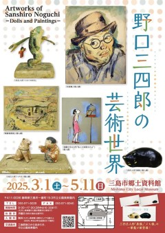

すべて表示
すべて表示 講座 / WS
講座 / WS 読書会
読書会 展示
展示 ログ
ログ ノート
ノート＊ すべて静岡県三島市のイベントです。(2025年)
3月24日（月曜）17:30〜19:30
詩を持ち寄る日
好きな詩・紹介したい詩を持って集まります。自作でも誰かの作品でもOKです。参加者みんなが手に取れる形（本・コピーしたもの・タイプして取り出したもの・手書き）または音声や動画でも、お好きな形で持ち寄ってください。
-- CRY IN PUBLIC
- 【日時】 3月24日（月曜）17:30〜19:30
- 【場所】 CRY IN PUBLIC（JR三島駅より徒歩10分）
- 【参加費】 カンパ制
- 【申込】 要申し込み。詳細は CRY IN PUBLIC を参照

3月20日 -- 3月24日
第16回東部高写連優秀作品展
静岡県東部高等学校写真連盟によるコンクールの上位入賞作品を中心とした写真展です。Via701ギャラリー詳細ページ
- 【場所】 Via701 2F ギャラリー701（三島広小路駅より徒歩2分）
- 【開園】 9:00～16:30 月曜休園

1月11日 -- 3月30日 11:30〜
【楽寿園】カピバラのお風呂
楽寿園のカピバラたちがお風呂に入ります（土日祝日限定）。3月30日まで。雨天時中止。
どうぶつふれあい広場内。11時30分からお湯張り開始。
- 【場所】 楽寿園（JR三島駅より徒歩10分）
- 【開園】 9:00～16:30 月曜休園

3月1日 -- 5月11日
野口三四郎の芸術世界
三島市出身の人形作家・野口三四郎の展示です。
早世の作家野口の足跡を追いつつ、代表的な作品「三四郎（みよろ）人形」のほか、朝鮮半島でのスケッチなどが展示されています。
三島の風土を想起させるおだやかで牧歌的な三四郎の作風は、長く市民にも親しまれてきましたが、三島のお土産として人気だった複製三四呂人形が作られなくなって久しいこともあり、若い市民や新しく移住してきた方々にはあまり知られていません。
本企画展が、幅広い方々に郷土ゆかりの芸術家・野口三四郎を知っていただき、三島の風土や文化への理解を深めていただくきっかけになれば幸いです。
-- 三島市郷土資料館
- 【展示期間】 3月1日 -- 5月11日
- 【場所】 楽寿園内 三島市郷土資料館（JR三島駅より徒歩15分）
- 【開園】 9:00～16:30 月曜休園
- 【入場料】 楽寿園の入園料に含まれています